भूगोल (कक्षा 10) - अध्याय 4
कृषि (Agriculture) - विस्तृत सस्य विश्लेषण, भौगोलिक दशाएं एवं मानचित्र
भारत एक कृषि-प्रधान देश है। देश की लगभग दो-तिहाई जनसंख्या प्रत्यक्ष रूप से कृषि कार्यों में संलग्न है। कृषि एक प्राथमिक क्रिया (Primary Activity) है जो हमारे लिए भोजन उत्पन्न करने के साथ-साथ वस्त्र, चीनी, जूट, खाद्य तेल और चाय-कॉफी जैसे विशाल उद्योगों के लिए कच्चा माल प्रदान करती है। भौतिक पर्यावरण, तकनीकी ज्ञान और सामाजिक-सांस्कृतिक रीति-रिवाजों के आधार पर भारत में खेती के 3 प्रमुख प्रकार प्रचलित हैं।
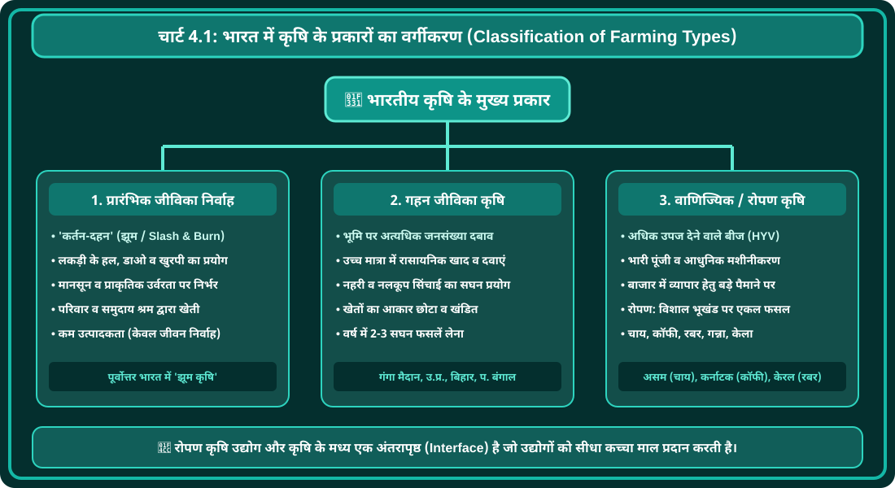
चार्ट 4.1: भारत में कृषि के प्रकारों का वर्गीकरण (Classification of Farming Types)।
📊 वर्गीकरण विश्लेषण:
• प्रारंभिक जीविका निर्वाह: 'कर्तन-दहन' (झूम), आदिम लकड़ी के औजार व परिवार श्रम।
• गहन जीविका कृषि: अधिक जनसंख्या घनत्व वाले क्षेत्रों में रासायनिक खादों व सघन सिंचाई द्वारा अधिकतम उत्पादन।
• वाणिज्यिक व रोपण कृषि: HYV बीज, आधुनिक मशीनरी व व्यापार हेतु विशाल फार्मों पर बड़े पैमाने पर उत्पादन।
यह कृषि भूमि के छोटे टुकड़ों पर आदिम औजारों (लकड़ी के हल, डाओ, खुदाई करने वाली छड़ी) तथा परिवार अथवा समुदाय श्रम की सहायता से की जाती है। यह पूरी तरह मानसून, मृदा की प्राकृतिक उर्वरता तथा फसल उगाने की पर्यावरणीय परिस्थितियों पर निर्भर होती है।
🔥 'कर्तन-दहन' प्रणाली (Slash and Burn Agriculture) की कार्यप्रणाली:
• किसान जंगल के एक हिस्से को काटकर झाड़ियों को जलाते हैं तथा उसकी राख में अनाज (मक्का, ज्वार) व जड़ वाली सब्जियां उगाते हैं।
• 2 से 3 वर्षों बाद जब मिट्टी की प्राकृतिक उर्वरता कम हो जाती है, तो किसान उस भूखंड को छोड़कर नए जंगल को साफ करने चले जाते हैं। इससे पुराने खेत को प्राकृतिक वनस्पतियों द्वारा अपनी उर्वरता स्वतः वापस पाने का अवसर मिल जाता है।
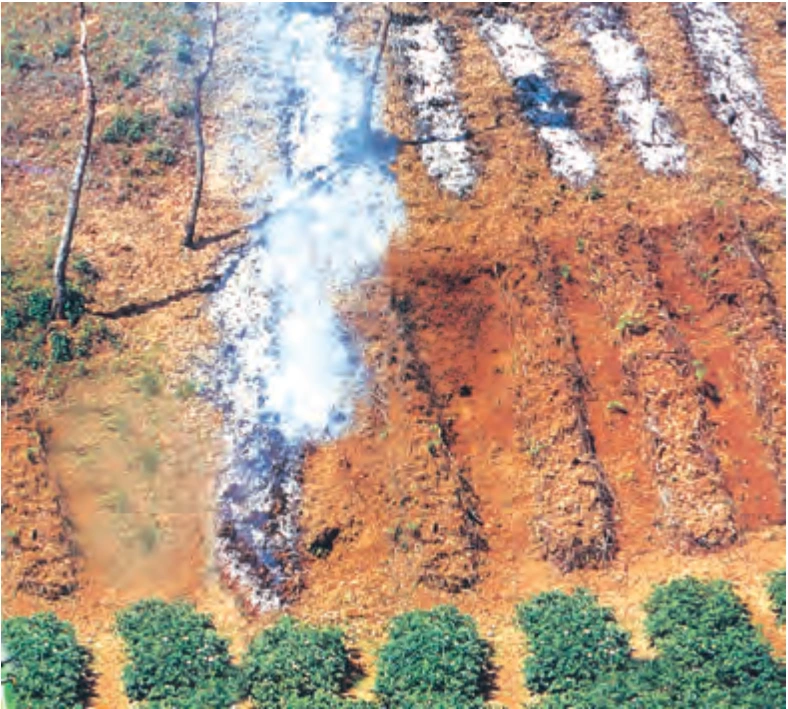
चित्र 4.1: कर्तन-दहन प्रणाली ('झूम' कृषि) - वनों को जलाकर राख में पारंपरिक बुवाई।
🌿 पारंपरिक निर्वाह दृश्य:
• पहाड़ी व जंगली ढलानों पर पेड़ों को काटकर जलाई गई भूमि पर बिना किसी रासायनिक खाद या आधुनिक औजार के की जाने वाली आदिम खेती।
📌 परीक्षा उपयोगी विशेष - झूम कृषि के विभिन्न स्थानीय एवं अंतर्राष्ट्रीय नाम:
• पूर्वोत्तर भारत (असम, मेघालय, मिजोरम, नागालैंड): 'झूम' (Jhumming)
• मणिपुर: पामलू (Pamlou) | बस्तर (छत्तीसगढ़) व अंडमान: दीपा (Dipa)
• मध्य प्रदेश: बेवर (Bewar) या दहिया (Dahiya) | आंध्र प्रदेश: पोडू (Podu) या पेंडा (Penda)
• ओडिशा: पामा डाबी / कोमन / बरिंगा | पश्चिमी घाट: कुमारी
• दक्षिण-पूर्वी राजस्थान: वालरे या वाल्तरे | हिमालय पर्वतीय क्षेत्र: खिल | झारखंड: कुरुवा
• विश्व में स्थानीय नाम: मैक्सिको व मध्य अमेरिका में 'मिल्पा', वेनेजुएला में 'कोनुको', ब्राजील में 'रोका', मध्य अफ्रीका में 'मसोले', इंडोनेशिया में 'लदांग', वियतनाम में 'रे'।
यह कृषि उन सघन बसे क्षेत्रों में की जाती है जहाँ भूमि पर जनसंख्या का भारी दबाव होता है। यह एक श्रम-सघन (Labour-intensive) खेती है।
- प्रमुख लक्षण: पीढ़ी-दर-पीढ़ी विरासत के अधिकार (Right of Inheritance) के कारण भूमि के टुकड़े छोटे और अलाभकारी होते जाते हैं। अतः सीमित भूमि से अधिकतम पैदावार लेने के लिए किसान भारी मात्रा में जैव-रासायनिक खादों, कीटनाशकों तथा सघन नहरी/नलकूप सिंचाई का उपयोग करते हैं।
- प्रमुख क्षेत्र: गंगा-ब्रह्मपुत्र के उपजाऊ मैदान, उत्तर प्रदेश, बिहार, पश्चिम बंगाल, ओडिशा एवं तटीय डेल्टा।
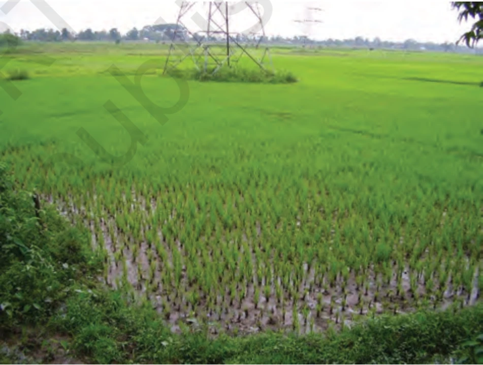
चित्र 4.2: गहन जीविका कृषि - जलभरे खेतों में धान की सघन रोपाई (Paddy Transplantation)।
👥 सघन मानवीय श्रम:
• छोटे खेतों से वर्ष में दो या तीन फसलें लेने के लिए परिवार के सदस्य व मजदूर घुटनों तक भरे पानी में धान के छोटे पौधों की सघन रोपाई करते हैं।
वाणिज्यिक कृषि का मुख्य उद्देश्य बाजार में बिक्री हेतु अधिक लाभ कमाना है। इसमें उच्च उपज वाले बीजों (HYV Seeds), रासायनिक उर्वरकों और कीटनाशकों का बड़े पैमाने पर प्रयोग किया जाता है।
☕ रोपण कृषि (Plantation Agriculture) के प्रमुख लक्षण:
1. एकल फसल (Single Crop): एक बहुत बड़े विस्तृत भूखंड पर केवल एक ही फसल उगाई जाती है।
2. उद्योग और कृषि का अंतरापृष्ठ (Interface): यह सीधे तौर पर उद्योगों से जुड़ी होती है (जैसे चाय की पत्ती बागान से सीधे चाय फैक्ट्री में प्रसंस्कृत होती है)।
3. पूंजी व श्रम सघन: इसमें भारी पूंजी निवेश और बड़ी संख्या में प्रवासी श्रमिकों की आवश्यकता होती है।
4. सुव्यवस्थित परिवहन: बागान, प्रसंस्करण कारखाने और बाजार को जोड़ने वाले तीव्र परिवहन नेटवर्क की अनिवार्यता।
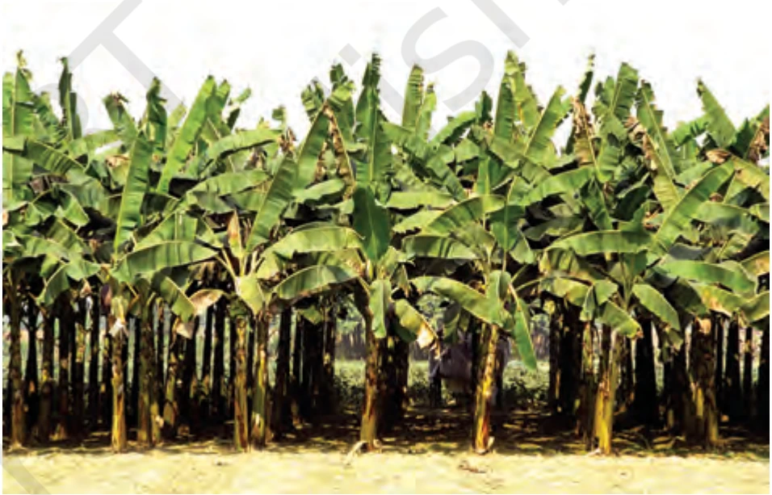
चित्र 4.3: दक्षिणी भारत में केले की रोपण कृषि (Banana Plantation in Southern India)।
🍌 वाणिज्यिक फल रोपण:
• तमिलनाडु, केरल और महाराष्ट्र में विशाल भूखंडों पर केले की वाणिज्यिक एकल फसल उगाई जाती है जो खाद्य प्रसंस्करण व घरेलू बाजार को आपूर्ति करती है।
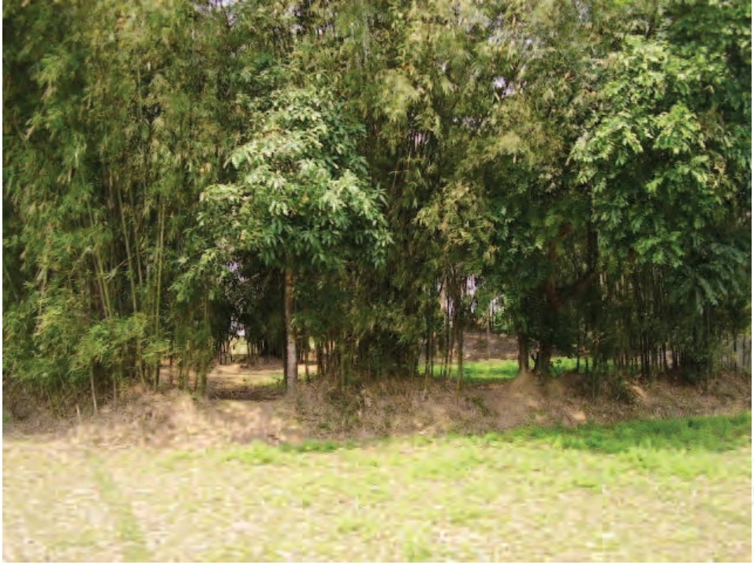
चित्र 4.4: पूर्वोत्तर भारत में बांस की रोपण खेती (Bamboo Plantation in North-East)।
🎋 पूर्वोत्तर भारत में रोपण:
• असम व पूर्वोत्तर राज्यों में कागज उद्योग, हस्तशिल्प एवं निर्माण कार्यों के लिए बांस के विशाल बागान लगाए जाते हैं।
भारत में जलवायु विविधता और मानसून चक्र के अनुसार 3 मुख्य सस्य मौसम (Cropping Seasons) होते हैं:
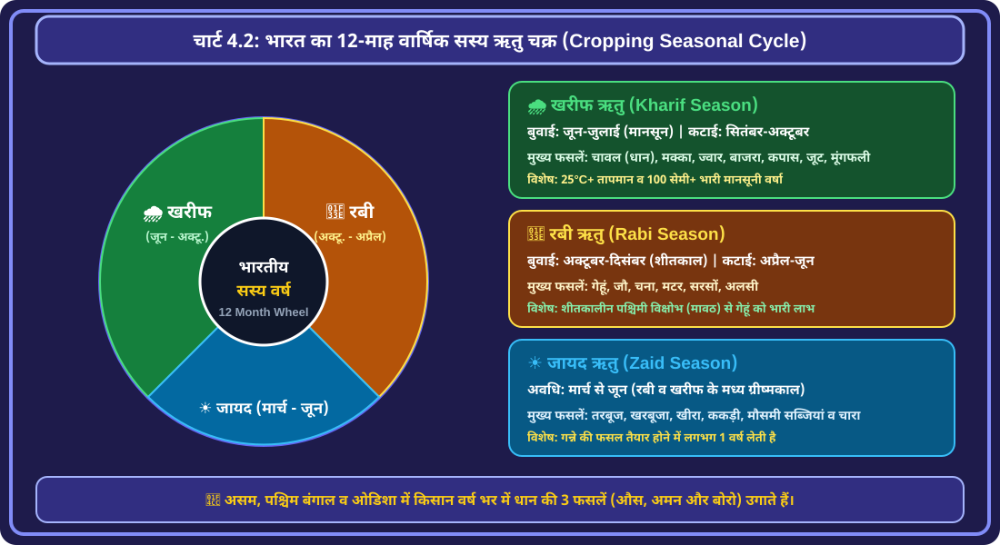
चार्ट 4.2: भारत का 12-माह वार्षिक सस्य ऋतु चक्र (रबी, खरीफ एवं जायद साइकल)।
🗓️ वार्षिक सस्य चक्र:
• खरीफ (जून-अक्टूबर): मानसूनी वर्षा में चावल, मक्का, ज्वार, बाजरा, कपास, जूट, मूंगफली।
• रबी (अक्टूबर-अप्रैल): शीत ऋतु में गेहूं, जौ, चना, मटर, सरसों (पश्चिमी विक्षोभ/मावठ से लाभ)।
• जायद (मार्च-जून): ग्रीष्म ऋतु में तरबूज, खरबूजा, खीरा, मौसमी सब्जियां एवं चारा।
| सस्य ऋतु |
बुवाई का समय |
कटाई का समय |
मुख्य फसलें |
जलवायु दशाएं |
| रबी (Rabi) |
अक्टूबर से दिसंबर (शीत ऋतु) |
अप्रैल से जून (ग्रीष्म ऋतु) |
गेहूं, जौ, मटर, चना, सरसों, अलसी |
उगाने हेतु कम तापमान, पकते समय खिली धूप, 50-75 सेमी वर्षा |
| खरीफ (Kharif) |
जून से जुलाई (मानसून आगमन) |
सितंबर से अक्टूबर |
चावल, मक्का, ज्वार, बाजरा, कपास, जूट, मूंगफली, सोयाबीन |
उच्च तापमान (25°C+), उच्च आर्द्रता, भारी वर्षा (100 सेमी+) |
| जायद (Zaid) |
मार्च से अप्रैल (ग्रीष्मकाल) |
मई से जून |
तरबूज, खरबूजा, खीरा, ककड़ी, मौसमी सब्जियां व चारा |
शुष्क एवं गर्म ग्रीष्मकालीन मौसम, सिंचाई पर पूर्ण निर्भरता |
भारत में विभिन्न भू-आकृतियों, मृदाओं और जलवायु के कारण खाद्यान्न, नकदी, तिलहन और रेशेदार फसलों की प्रचुर विविधता पाई जाती है।
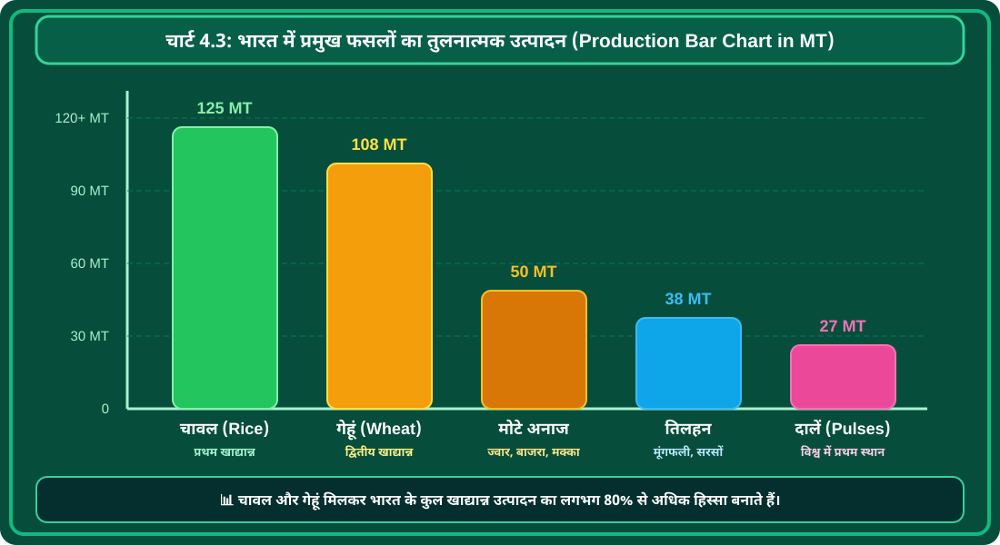
चार्ट 4.3: भारत में प्रमुख फसलों का तुलनात्मक उत्पादन (Production Bar Chart in MT)।
📊 उत्पादन तुलना:
• चावल: 125 मिलियन टन (भारत की प्रथम प्रमुख खाद्यान्न फसल)।
• गेहूं: 108 मिलियन टन (भारत की दूसरी प्रमुख खाद्यान्न फसल)।
• मोटे अनाज: 50 MT | तिलहन: 38 MT | दालें: 27 MT।
📌 सस्य ऋतु: खरीफ फसल (असम, बंगाल व ओडिशा में वर्ष में 3 फसलें: औस, अमन और बोरो)
🌡️ आवश्यक तापमान: 25°C से अधिक उच्च तापमान तथा उच्च आर्द्रता
🌧️ वार्षिक वर्षा: 100 सेमी से अधिक (कम वर्षा वाले क्षेत्रों में नहरी व नलकूप सिंचाई अनिवार्य)
🌱 उपयुक्त मृदा: जलोढ़ चिकनी मटियार मिट्टी (Alluvial Clayey Soil - जो जल को रोककर रख सके)
🗺️ प्रमुख उत्पादक राज्य: पश्चिम बंगाल (प्रथम), उत्तर प्रदेश, पंजाब, आंध्र प्रदेश, तेलंगाना, ओडिशा, बिहार, छत्तीसगढ़ ('धान का कटोरा'), असम तथा तमिलनाडु
🍽️ प्रमुख उपयोग: भारत की बहुसंख्यक आबादी का दैनिक मुख्य आहार (Staple Food); पोहा, मुरमुरे, चावल का आटा एवं स्टार्च उद्योग में उपयोग
💡 वैश्विक स्थिति: चीन के बाद भारत विश्व का दूसरा सबसे बड़ा चावल उत्पादक देश है
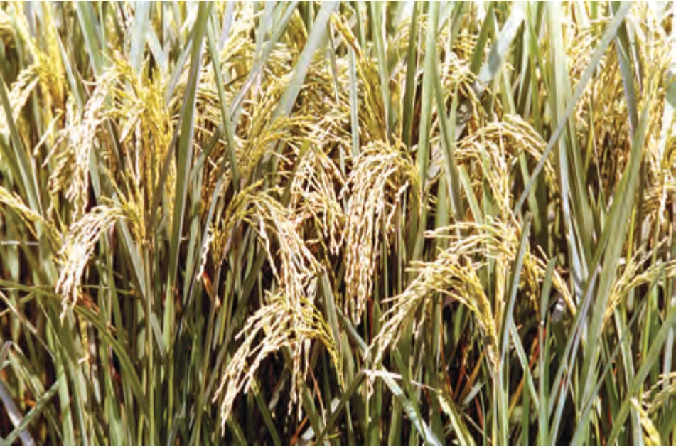
चित्र 4.5: खेत में पककर तैयार धान (चावल) की सुनहरी फसल।
🌾 खरीफ फसल परिपक्वता:
• मानसूनी वर्षा के बाद अक्टूबर माह में कटाई हेतु तैयार धान की लहलहाती सुनहरी बालियां।
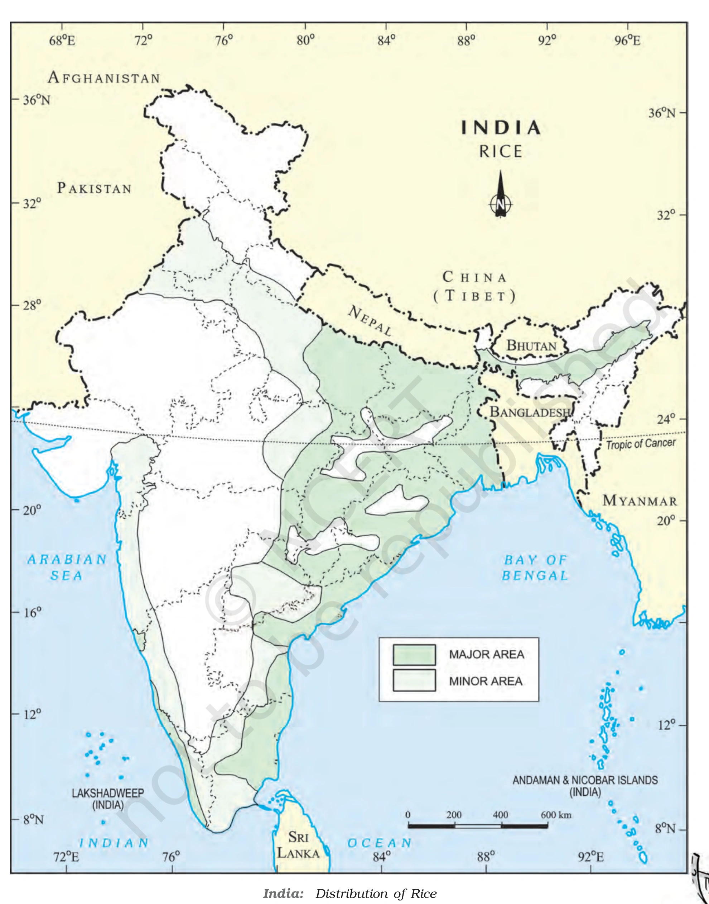
चित्र 4.6: भारत का चावल वितरण मानचित्र (मुख्य एवं गौण उत्पादक क्षेत्र)।
🗺️ मानचित्र विश्लेषण:
• गहरा हरा क्षेत्र (मुख्य क्षेत्र): पश्चिम बंगाल, ओडिशा, तटीय आंध्र प्रदेश, बिहार, पूर्वी उत्तर प्रदेश एवं असम के ब्रह्मपुत्र मैदान।
• हल्का हरा क्षेत्र (गौण क्षेत्र): पंजाब, हरियाणा एवं पश्चिमी उत्तर प्रदेश (जहाँ हरित क्रांति व नहरों द्वारा धान उगाया जाता है)।
📌 सस्य ऋतु: रबी फसल (शीतकाल में बुवाई, ग्रीष्म में कटाई)
🌡️ आवश्यक तापमान: बोते व बढ़ते समय 10°C से 15°C (ठंडी जलवायु) तथा पकते समय 21°C से 26°C और खिली हुई तेज धूप
🌧️ वार्षिक वर्षा: 50 से 75 सेमी समान रूप से वितरित वार्षिक वर्षा
🌱 उपयुक्त मृदा: दोमट जलोढ़ मृदा (Loamy Alluvial Soil) तथा दक्कन के पठार की काली मिट्टी
🗺️ प्रमुख उत्पादक राज्य: उत्तर प्रदेश (कुल उत्पादन में प्रथम), पंजाब (प्रति हेक्टेयर उपज में शीर्ष), हरियाणा, मध्य प्रदेश, राजस्थान एवं बिहार
🍽️ प्रमुख उपयोग: उत्तर और उत्तर-पश्चिमी भारत का मुख्य खाद्यान्न; रोटी, ब्रेड, बेकरी उत्पाद, सूजी, मैदा एवं पास्ता उद्योग का आधार
💡 विशेष भौगोलिक कारक: भूमध्यसागर से उठने वाले पश्चिमी विक्षोभ (Western Disturbances / मावठ) से होने वाली शीतकालीन वर्षा गेहूं की फसल के लिए अमृत तुल्य होती है
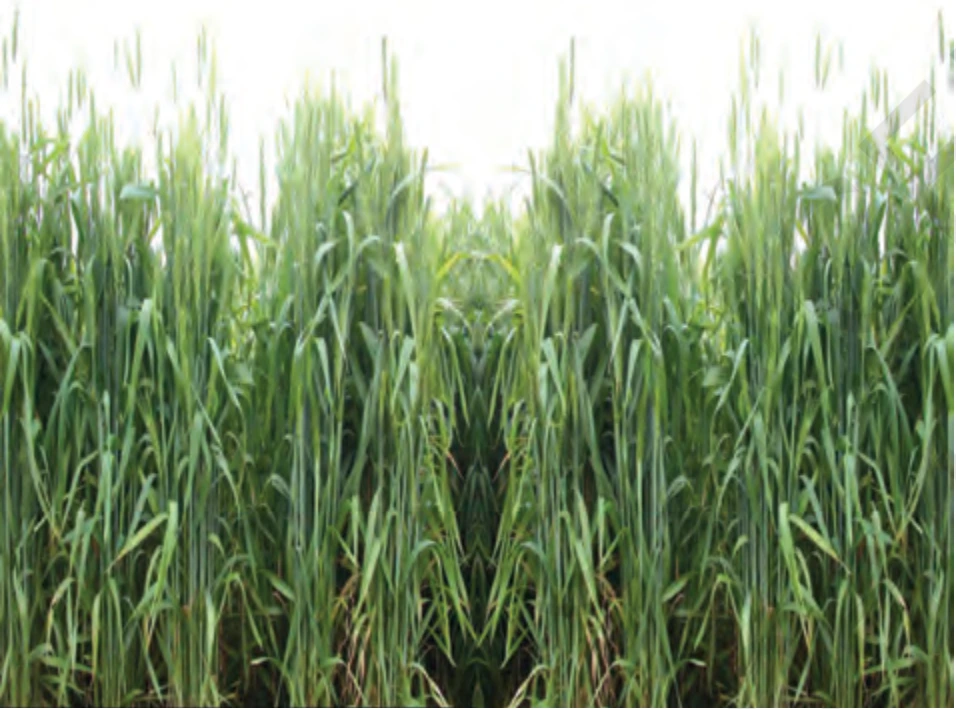
चित्र 4.7: रबी की प्रमुख फसल - गेहूं की खेती (Wheat Cultivation)।
🌾 रबी फसल दृश्य:
• गंगा-सतलुज के मैदानों में शीतकाल के दौरान लहलहाती गेहूं की हरी-भरी फसल।
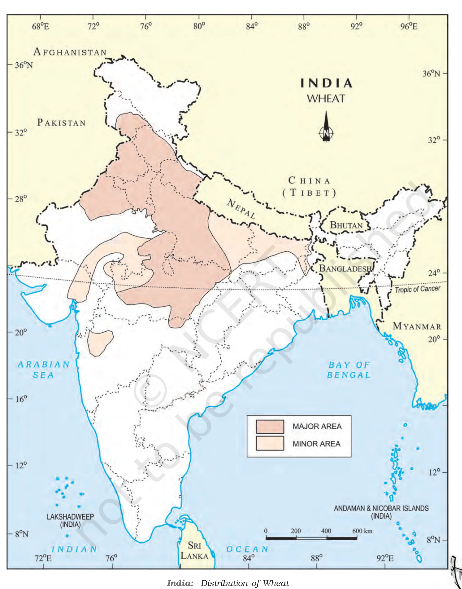
चित्र 4.8: भारत का गेहूं वितरण मानचित्र (मुख्य एवं गौण उत्पादक क्षेत्र)।
🗺️ मानचित्र विश्लेषण:
• दो प्रमुख गेहूं उत्पादक क्षेत्र:
1. उत्तर-पश्चिम में गंगा-सतलुज का समतल जलोढ़ मैदान (पंजाब, हरियाणा, पश्चिमी उ.प्र.)।
2. दक्कन के पठार का काली मिट्टी वाला प्रदेश (मध्य प्रदेश, महाराष्ट्र, गुजरात व पूर्वी राजस्थान)।
📌 ज्वार (Jowar): क्षेत्रफल व उत्पादन में देश की तीसरी प्रमुख खाद्यान्न फसल। यह वर्षा-पोषित (Rain-fed) फसल है जिसे बहुत कम सिंचाई चाहिए। प्रमुख राज्य: महाराष्ट्र (प्रथम), कर्नाटक, आंध्र प्रदेश, मध्य प्रदेश।
📌 बाजरा (Bajra): बलुआ (Sandy) और उथली काली मिट्टी पर अच्छी तरह फलता-फूलता है। तापमान: 25°-30°C, वर्षा: 40-50 सेमी। प्रमुख राज्य: राजस्थान (देश में प्रथम स्थान), उत्तर प्रदेश, गुजरात, हरियाणा, महाराष्ट्र।
📌 रागी (Ragi): शुष्क प्रदेशों की फसल है जो लाल, काली, बलुआ व दोमट मिट्टी में उगती है। यह आयरन, कैल्शियम, रफेज और सूक्ष्म पोषक तत्वों से भरपूर होती है। प्रमुख राज्य: कर्नाटक (प्रथम), तमिलनाडु, उत्तराखंड, हिमाचल प्रदेश।
🍽️ उपयोग व महत्व: कुपोषण से निपटने में अत्यंत सहायक; रोटी, दलिया, पशुओं के लिए पौष्टिक सूखा चारा एवं आधुनिक हेल्थ-फूड्स (मिल्लेट्स कुकीज, फ्लेक्स)।
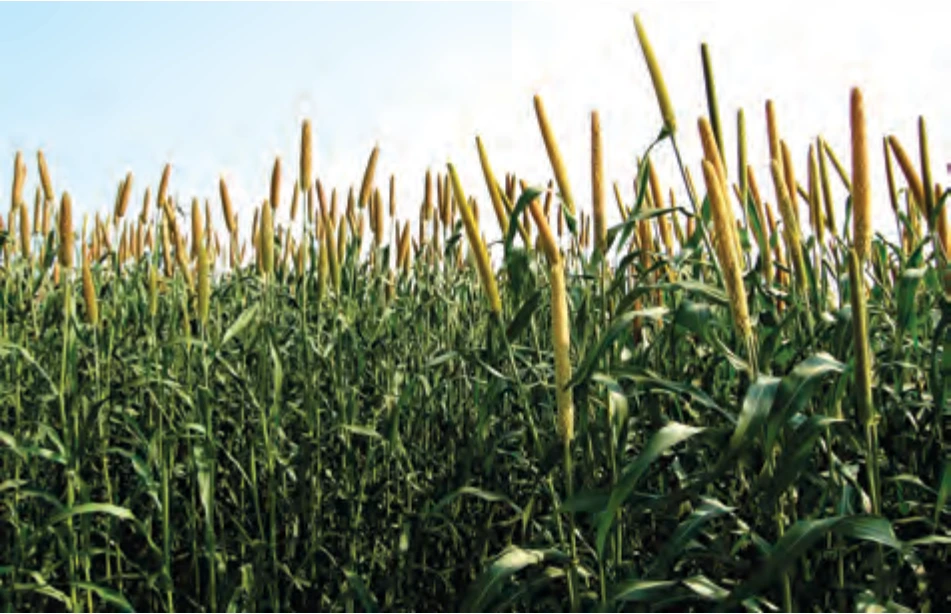
चित्र 4.9: मोटे पोषक अनाज - राजस्थान में बाजरे की खेती (Bajra Cultivation)।
🌾 शुष्क कृषि दृश्य:
• कम वर्षा और रेतीली मिट्टी में उगने वाले लंबे बाजरे के पौधों पर पके हुए दानेदार सिट्टे।
📌 सस्य ऋतु: मुख्य रूप से खरीफ फसल (लेकिन बिहार जैसे राज्यों में रबी ऋतु में भी उगाई जाती है)
🌡️ आवश्यक तापमान: 21°C से 27°C तापमान
🌧️ वार्षिक वर्षा: 50 से 100 सेमी मध्यम वर्षा
🌱 उपयुक्त मृदा: पुरानी जलोढ़ मृदा (Old Alluvial Soil / बांगर मिट्टी)
🗺️ प्रमुख उत्पादक राज्य: कर्नाटक (प्रथम), मध्य प्रदेश, उत्तर प्रदेश, बिहार, आंध्र प्रदेश, तेलंगाना
🍽️ प्रमुख उपयोग: मनुष्य के लिए पौष्टिक भोजन (मकई की रोटी, पॉपकॉर्न, कॉर्नफ्लेक्स), मुर्गी व पशु आहार, कॉर्न ऑयल, बायो-एथेनॉल एवं स्टार्च उद्योग में भारी मांग
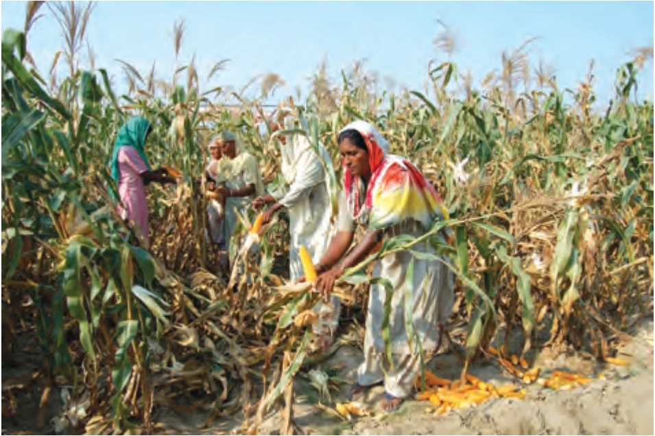
चित्र 4.10: मक्के की फसल (Maize Cultivation)।
🌽 दोहरे उपयोग की फसल:
• खाद्यान्न और पशुओं के हरे चारे दोनों के रूप में उगाई जाने वाली बहुउपयोगी मक्का।
📌 मुख्य किस्में: खरीफ दालें (तुअर/अरहर, उड़द, मूंग) | रबी दालें (चना, मटर, मसूर)
🌡️ आवश्यक जलवायु: शुष्क परिस्थितियां, कम नमी व सामान्य तापमान (20°-25°C)
🌱 उपयुक्त मृदा: हल्की दोमट व शुष्क मिट्टी (जल-जमाव से मुक्त)
🗺️ प्रमुख उत्पादक राज्य: मध्य प्रदेश (प्रथम), राजस्थान, महाराष्ट्र, उत्तर प्रदेश, कर्नाटक
🍽️ उपयोग व पोषण: शाकाहारी आहार में प्रोटीन का सबसे बड़ा स्रोत; दाल, बेसन, मिठाई, नमकीन व पशु आहार
🔬 पारिस्थितिक महत्व (Nitrogen Fixation): अरहर (तुअर) को छोड़कर अन्य सभी दालें वायुमंडल से नाइट्रोजन लेकर भूमि में स्थिर (Fix) करती हैं, जिससे मिट्टी की प्राकृतिक उर्वरता स्वतः बढ़ जाती है। इसलिए इन्हें फसल चक्र (Crop Rotation) में बोया जाता है
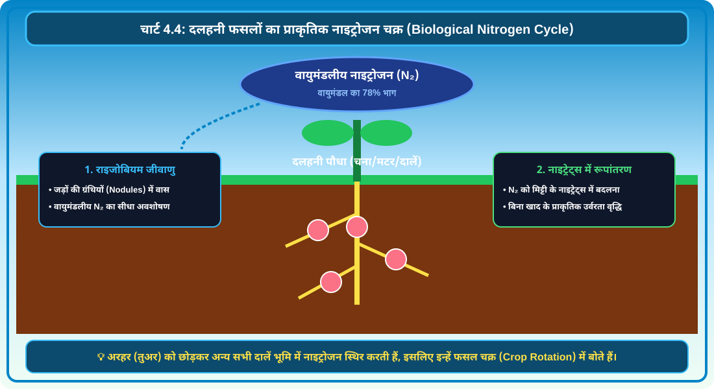
चार्ट 4.4: दलहनी फसलों का प्राकृतिक नाइट्रोजन चक्र (Biological Nitrogen Fixation Cycle)।
🔬 वैज्ञानिक चक्र डायग्राम:
• वायुमंडलीय नाइट्रोजन (78%) ➔ दलहनी जड़ों में राइजोबियम जीवाणु ग्रंथियां ➔ मिट्टी में घुलनशील नाइट्रेट्स ➔ प्राकृतिक उर्वरता बहाली।
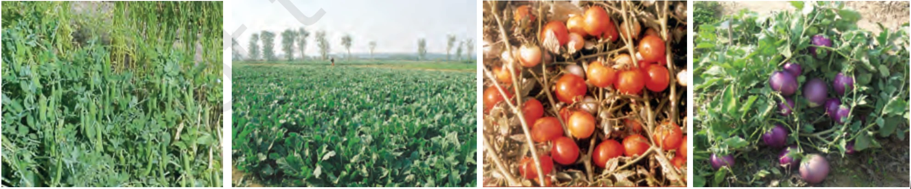
चित्र 4.11: दलहनी व सब्जी फसल - मटर की खेती (Cultivation of Peas)।
🌱 दलहनी फसलें:
• रबी मौसम में उगाई जाने वाली मटर जो भोजन में प्रोटीन देने के साथ भूमि को उपजाऊ बनाती है।
📌 जलवायु: उष्ण और उपोष्ण कटिबंधीय फसल (तैयार होने में लगभग 1 वर्ष का समय)
🌡️ आवश्यक तापमान: 21°C से 27°C गर्म और आर्द्र जलवायु
🌧️ वार्षिक वर्षा: 75 से 100 सेमी वर्षा (कम वर्षा वाले क्षेत्रों में सिंचाई आवश्यक)
🌱 उपयुक्त मृदा: गहरी उपजाऊ जलोढ़ एवं काली मिट्टी
🗺️ प्रमुख उत्पादक राज्य: उत्तर प्रदेश (क्षेत्रफल व उत्पादन में प्रथम), महाराष्ट्र (उच्च सुक्रोज मात्रा), कर्नाटक, तमिलनाडु, आंध्र प्रदेश, बिहार, पंजाब, हरियाणा
🍽️ औद्योगिक उपयोग: चीनी, गुड़, खांडसारी, शीरा (Molasses - अल्कोहल व एथेनॉल निर्माण) तथा खोई (Bagasse - कागज उद्योग व बिजली उत्पादन)
💡 वैश्विक स्थान: ब्राजील के बाद भारत गन्ने का विश्व में दूसरा सबसे बड़ा उत्पादक देश है
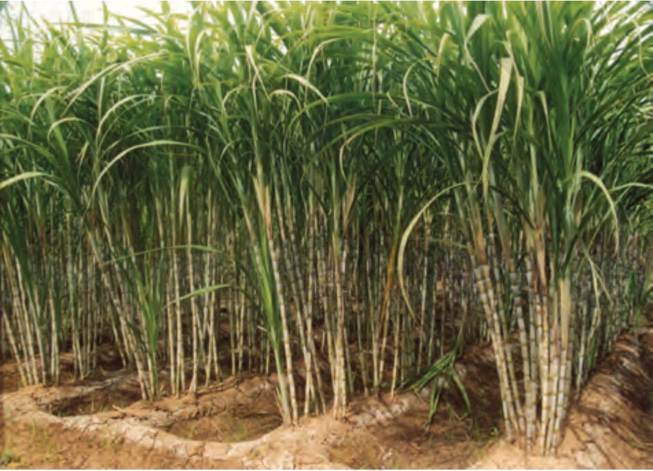
चित्र 4.12: गन्ने की व्यावसायिक फसल (Sugarcane Cultivation)।
🎋 नकदी फसल दृश्य:
• उत्तर प्रदेश व महाराष्ट्र के विशाल गन्ने के खेत जो चीनी मिलों को कच्चा माल उपलब्ध कराते हैं।
📌 मुख्य तिलहन: मूंगफली, सरसों, नारियल, तिल, सोयाबीन, अरंडी (Castor), बिनौला (Cotton seed), अलसी (Linseed) और सूरजमुखी। ये देश के कुल बोए गए क्षेत्र के 12% भाग पर उगाए जाते हैं।
📌 मूंगफली (Groundnut): खरीफ फसल है जो देश के कुल तिलहन उत्पादन का आधा भाग (50%) बनाती है। प्रमुख राज्य: गुजरात (प्रथम), राजस्थान, तमिलनाडु।
📌 सरसों (Mustard): रबी की प्रमुख तिलहन फसल। प्रमुख राज्य: राजस्थान (देश में प्रथम स्थान), हरियाणा, मध्य प्रदेश।
📌 सोयाबीन (Soybean): खरीफ तिलहन। प्रमुख राज्य: मध्य प्रदेश ('सोया स्टेट') एवं महाराष्ट्र।
🍽️ उपयोग: खाना पकाने का शुद्ध तेल (Edible Oil), साबुन, सौंदर्य प्रसाधन (Cosmetics), वार्निश एवं तेल निष्कर्षण के बाद बची 'खली' (Oil-cake) पशुओं का उत्तम पौष्टिक आहार।
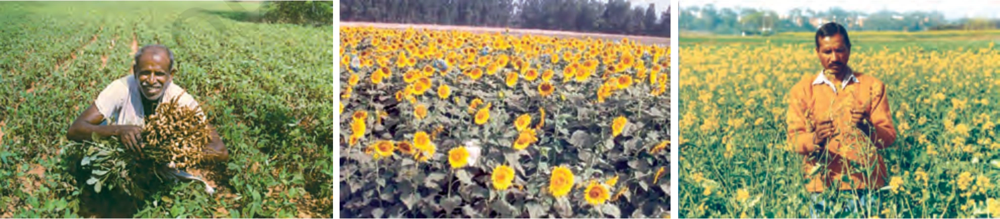
चित्र 4.13: प्रमुख तिलहन फसलें - खेत में तैयार मूंगफली, सूरजमुखी एवं सरसों।
🌻 तिलहन विविधता:
• भारत में खाद्य तेल आवश्यकताओं की पूर्ति करने वाली प्रमुख तिलहन फसलें।
🍃 चाय (Tea):
• जलवायु: उष्ण व उपोष्ण कटिबंधीय नम जलवायु, वर्ष भर समान रूप से होने वाली हल्की बौछारें।
• मृदा: गहरी, उपजाऊ, जीवांश (ह्यूमस) युक्त तथा सुप्रवाहित ढलवां मिट्टी (पानी का जमाव न हो)।
• प्रमुख राज्य: असम (देश का 50%+ चाय उत्पादन), पश्चिम बंगाल (दार्जिलिंग व जलपाईगुड़ी की सुगंधित चाय), तमिलनाडु, केरल, उत्तराखंड, हिमाचल प्रदेश।
• उद्योग: श्रम-सघन उद्योग जिसमें पत्तियों की ताजगी बनाए रखने हेतु बागानों में ही प्रोसेसिंग यूनिट होती है।
☕ कॉफी (Coffee):
• किस्म: भारत में मुख्य रूप से उत्तम गुणवत्ता वाली 'अरेबिका' (Arabica) किस्म उगाई जाती है, जो मूल रूप से यमन से लाई गई थी।
• इतिहास व क्षेत्र: इसकी खेती की शुरुआत कर्नाटक की बाबा बुदन पहाड़ियों से हुई। आज इसकी खेती नीलगिरि की पहाड़ियों (कर्नाटक, केरल व तमिलनाडु) तक सीमित है।
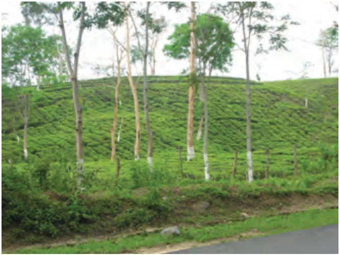
चित्र 4.14: चाय की खेती (Tea Cultivation) - असम की पहाड़ियों पर चाय बागान।
☕ रोपण बागान दृश्य:
• ढलवां पहाड़ियों पर पानी की निकासी युक्त गहरी उपजाऊ मिट्टी में फैली चाय की हरी-भरी झाड़ियां।
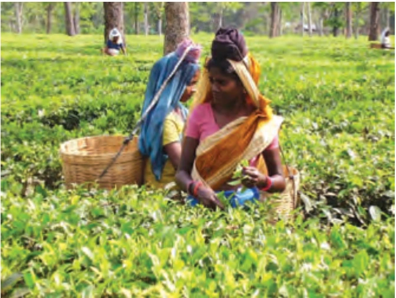
चित्र 4.15: चाय की पत्तियां चुनना (Tea-leaves Harvesting)।
🍃 श्रम-सघन प्रक्रिया:
• पीठ पर बांस की टोकरी बांधे चाय की कोमल पत्तियों को कुशलतापूर्वक चुनती महिला श्रमिक।
🍎 बागवानी फसलें (Horticulture): आम (महाराष्ट्र का अल्फोंसो, उ.प्र., आ.प्र.), संतरा (नागपुर व चेरापूंजी), केला (केरल, मिजोरम, तमिलनाडु), सेब व खुबानी (जम्मू-कश्मीर, हिमाचल प्रदेश)।
🌲 प्राकृतिक रबर (Rubber): भूमध्यरेखीय फसल, 200 सेमी से अधिक वर्षा तथा 25°C से अधिक तापमान। प्रमुख राज्य: केरल (शीर्ष), तमिलनाडु, कर्नाटक, अंडमान निकोबार, मेघालय के गारो हिल्स। उपयोग: ऑटोमोबाइल टायर, ट्यूब, औद्योगिक बेल्ट।
🧵 कपास (Cotton): दक्कन के पठार की काली मिट्टी (Regur Soil), उच्च तापमान, हल्की वर्षा/सिंचाई, 210 पाला-रहित दिन (Frost-free days) तथा खिली हुई तेज धूप। फसल अवधि: 6 से 8 महीने। प्रमुख राज्य: महाराष्ट्र, गुजरात, मध्य प्रदेश, कर्नाटक, तेलंगाना। उपयोग: सूती वस्त्र उद्योग।
🌾 जूट (Jute - सुनहरा रेशा / Golden Fiber): बाढ़ के मैदानों की नवीन जलोढ़ मिट्टी (खादर), उच्च तापमान। प्रमुख राज्य: पश्चिम बंगाल (हुगली बेसिन), बिहार, असम, ओडिशा, मेघालय। उपयोग: गनी बैग (बोरियां), रस्सियां, चटाई, कालीन, सजावटी सामान। (सिंथेटिक नायलॉन से प्रतिस्पर्धा के कारण संकट में)।
🐛 रेशम (Silk): रेशम के कीड़ों के पालन को सेरीकल्चर (Sericulture) कहते हैं जो शहतूत (Mulberry) की हरी पत्तियों पर पलते हैं तथा कोकून (Cocoon) से कीमती रेशमी धागा बनाते हैं।
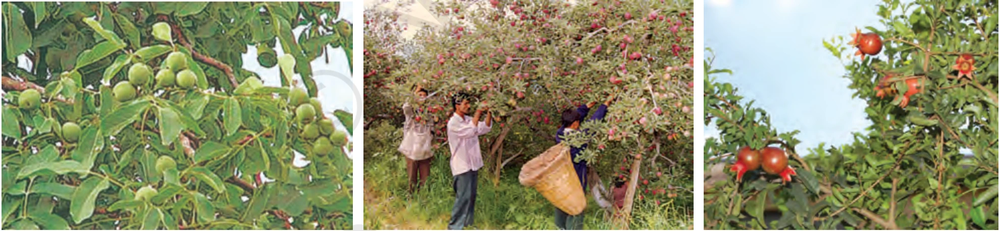
चित्र 4.16: बागवानी फसलें - खुबानी, सेब एवं अनार (Apricots, Apple & Pomegranate)।
🍎 बागवानी समृद्धि:
• जम्मू-कश्मीर और हिमाचल प्रदेश के सेब व खुबानी तथा महाराष्ट्र के अनार का प्रमुख उत्पादन।
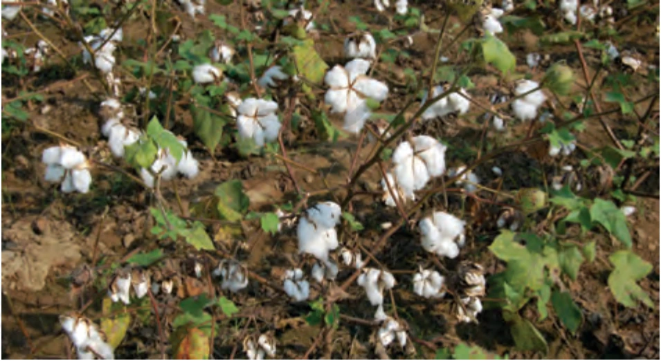
चित्र 4.17: कपास की खेती (Cotton Cultivation) - खिली सफेद कपास।
🧵 सूती वस्त्र का आधार:
• 210 पाला-रहित दिनों की खिली धूप में पकी सफेद कपास, जिसे दक्कन के पठार पर हाथ से चुना जाता है।
स्वतंत्रता के समय भारतीय कृषि पिछड़ी अवस्था में थी। अतः सरकार द्वारा दो स्तरों पर व्यापक सुधार कार्यक्रम चलाए गए:
🏛️ 1. संस्थागत सुधार (Institutional Reforms):
• जमींदारी उन्मूलन: बिचौलियों की जमींदारी प्रथा समाप्त कर भूमि जोतने वाले किसानों को मालिकाना हक दिया गया।
• भूमि की चकबंदी (Consolidation of Holdings): बिखरे हुए छोटे खेतों को एक स्थान पर जोड़कर बड़े आकार के उपयोगी खेत बनाए गए।
• सहकारिता (Cooperation): किसानों को बीज, खाद व उपकरण सस्ते में उपलब्ध कराने हेतु सहकारी समितियां बनाई गईं।
⚙️ 2. तकनीकी व वित्तीय सुधार (Technological & Financial Reforms):
• हरित क्रांति (Green Revolution): 1960-70 के दशक में अधिक उपज देने वाले बीजों (HYV Seeds), उर्वरकों और आधुनिक मशीनरी द्वारा गेहूं व चावल उत्पादन में ऐतिहासिक उछाल।
• श्वेत क्रांति (White Revolution / Operation Flood): दुग्ध उत्पादन में आत्मनिर्भरता हेतु देशव्यापी डेयरी नेटवर्क।
• व्यापक फसल बीमा योजना: सूखा, बाढ़, चक्रवात, ओलावृष्टि, आग व कीटों से फसल नष्ट होने पर वित्तीय मुआवजा।
• किसान क्रेडिट कार्ड (KCC) एवं PAIS: किसानों को महाजनों के चंगुल से बचाने हेतु ग्रामीण बैंकों से अत्यंत कम ब्याज पर ऋण।
• न्यूनतम समर्थन मूल्य (MSP): बिचौलियों और सटोरियों द्वारा किसानों के शोषण को रोकने हेतु बुवाई से पूर्व सरकार द्वारा लाभकारी मूल्य की घोषणा।
• मौसम बुलेटिन व कृषि कार्यक्रम: दूरदर्शन व आकाशवाणी पर विशेष 'कृषि दर्शन' प्रसारण।
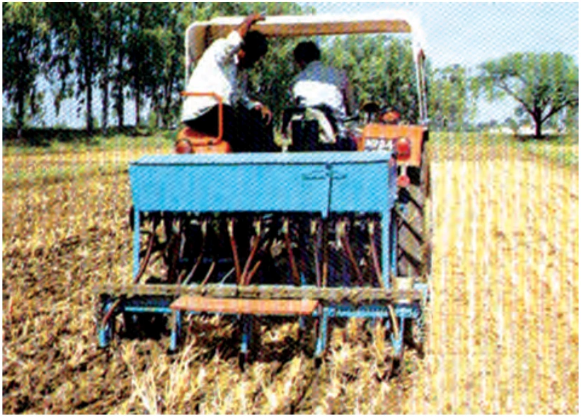
चित्र 4.18: आधुनिक कृषि यंत्रीकरण - ट्रैक्टर द्वारा जुताई।
🚜 तकनीकी क्रांति:
• बैलों के स्थान पर आधुनिक ट्रैक्टरों और कल्टीवेटरों से समय, श्रम व लागत की भारी बचत।
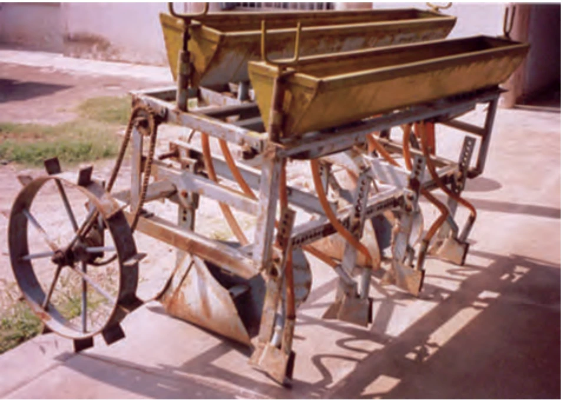
चित्र 4.19: आधुनिक कंबाइन हार्वेस्टर द्वारा फसल कटाई व थ्रेशिंग।
⚙️ मशीनीकरण:
• बड़े खेतों में एक साथ कटाई, गहाई और सफाई करने वाली आधुनिक कंबाइन मशीन।
महात्मा गांधी के आध्यात्मिक उत्तराधिकारी संत विनोबा भावे ने भूमिहीन किसानों की समस्या के समाधान हेतु 'भूदान - ग्रामदान आंदोलन' चलाया:
- शुरुआत: आंध्र प्रदेश के पोचमपल्ली गाँव में जब 80 भूमिहीन हरिजन परिवारों ने जीवन यापन हेतु 80 एकड़ जमीन की मांग की, तो स्थानीय जमींदार श्री रामचंद्र रेड्डी ने अपनी 80 एकड़ निजी भूमि दान कर दी। इसे 'भूदान' कहा गया।
- ग्रामदान: बाद में कुछ बड़े जमींदारों ने अपने पूरे-पूरे गाँव भूमिहीनों में बांटने की घोषणा की, जिसे 'ग्रामदान' कहा गया।
- रक्तहीन क्रांति: बिना किसी कानूनी दबाव या हिंसा के केवल हृदय परिवर्तन द्वारा भूमि वितरण होने के कारण इतिहासकारों ने इसे 'रक्तहीन क्रांति' (Bloodless Revolution) का नाम दिया।
कृषि भारतीय अर्थव्यवस्था की रीढ़ है। देश के प्रत्येक नागरिक को पर्याप्त और पौष्टिक भोजन उपलब्ध कराने हेतु भारत सरकार ने राष्ट्रीय खाद्य सुरक्षा प्रणाली बनाई है जिसके दो मुख्य घटक हैं:
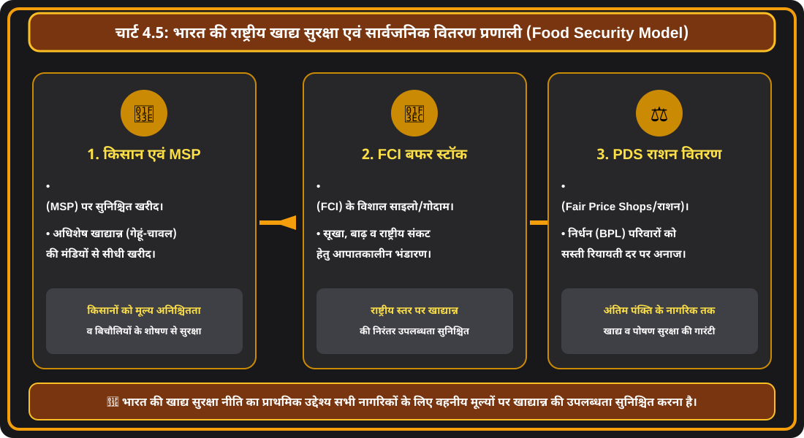
चार्ट 4.5: राष्ट्रीय खाद्य सुरक्षा एवं सार्वजनिक वितरण प्रणाली (Food Security Model)।
🌾 3-चरणीय खाद्य सुरक्षा चक्र:
1. MSP पर खरीद: सरकार द्वारा किसानों से न्यूनतम समर्थन मूल्य पर गेहूं-चावल की सुनिश्चित खरीद।
2. बफर स्टॉक (Buffer Stock): भारतीय खाद्य निगम (FCI) के विशाल गोदामों में आपातकालीन सुरक्षित भंडारण।
3. PDS राशन वितरण: उचित मूल्य की दुकानों (Fair Price Shops) द्वारा BPL व गरीब परिवारों को रियायती दर पर अनाज आपूर्ति।
📌 परीक्षा उपयोगी त्वरित सारांश बिंदु (Quick Exam Takeaways):
1. कृषि प्रकार: प्रारंभिक निर्वाह (झूम/कर्तन-दहन), गहन जीविका (जनसंख्या दबाव), वाणिज्यिक व रोपण (चाय, कॉफी, केला, बांस)।
2. सस्य ऋतुएं: रबी (शीतकाल/गेहूं/सरसों), खरीफ (मानसून/चावल/कपास), जायद (ग्रीष्म/तरबूज/खीरा)।
3. चावल: प्रथम खाद्यान्न (उष्णकटिबंधीय, 25°C+ तापमान, 100 सेमी+ वर्षा, जलोढ़ मिट्टी, प. बंगाल प्रथम)।
4. गेहूं: द्वितीय खाद्यान्न (शीतोष्ण, 10-15°C बढ़ते समय, 50-75 सेमी वर्षा, उ.प्र. व पंजाब प्रमुख)।
5. दालें: प्रोटीन का स्रोत व राइजोबियम द्वारा वायुमंडलीय नाइट्रोजन स्थिरीकरण (म.प्र. प्रथम)।
6. कपास: 210 पाला-रहित दिन, खिली धूप, काली मिट्टी (महाराष्ट्र व गुजरात प्रथम)।
7. रक्तहीन क्रांति: विनोबा भावे का भूदान-ग्रामदान आंदोलन (पोचमपल्ली)।
8. खाद्य सुरक्षा: FCI बफर स्टॉक + PDS उचित मूल्य राशन व्यवस्था।